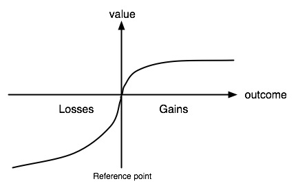

Financial Market
Table of Contents
- 1. Conceptions
- 2. Money
- 3. Important Rates
- 4. Insurance
- 5. Interest Rate
- 6. Bonds
- 7. Mortgage
- 8. Regulation
- 9. Behavioral Finance
- 10. Stock
- 11. Forward Contracts
- 12. Futures
- 13. Options
- 14. CAPM
- 15. Efficient Markets Hypothesis
- 16. Analysis
- 17. Information Source
- 18. Strategy Benchmark
- 19. Instruments
- 20. Institutions
- 21. Payments
1 Conceptions
1.1 Aggregate input&output
GDP(gross domestic product)
is the market value of all final goods and services produced in a country during the course of the year.
- the most commonly reported measure of aggregate output.
- nominal GDP
When the total value of final goods and services is calculated using current prices, the resulting GDP measure is referred to as nominal GDP
- real GDP
A more reliable measure of economic production expresses values in terms of prices for an arbitrary base year, currently 2000. GDP measured with constant prices is referred to as real GDP
Aggregate income
the total income of factors of production from producing goods and services in the economy during the course of the year.
is best thought of as being equal to aggregate output
Because the payments for final goods and services must eventually flow back to the owners of the factors of production as income.
1.2 Aggregate price level
Three measures of the aggregate price level:
GDP deflator
is defined as nominal GDP divided by real GDP
PCE deflator
is defined as nominal PCE(personal consumption expenditures) divided by real PCE.
CPI(comumer price index)
is measured by pricing a "basket" of goods and services bought by a typical urban household.
1.3 Asymmetric Information
1.4 VAR(value at risk)
Value at risk is usually quoted in units of $ for a given probability and time horizon
Ex: 1% one-year VAR of $10 million means 1% chance that a portfolio will lose $10 million in a year
1.5 Stress Tests
The stress test is a test usually ordered by government to see how some firm will stand up to a financial crisis.
1.6 Cauchy Distribution
Fat-tailed
1.7 Random Walk
\[x_t=x_{t-1}+\varepsilon_t\]
First-order autoregressive(AR-1) Model
\[x_t=100+\rho(x_{t-1}-100)+\varepsilon_t\] Mean reverting (to 100), \(-1<\rho <1\)
2 Money
2.1 Three functions it provides:
- a store of value
- a unit of account
- a medium of transaction
2.2 Measurement
M1
includes the most liquid assets: currency, checking account deposits, and traveler's checkes.
M2
M1 + Small-denomination time deposits, Savings deposits and money market deposit accounts, Money market mutual fund shares (retail).
3 Important Rates
3.1 Prime Rate
The base interest rate on corporate bank loans, an indicator of the cost of business borrowing from banks.
3.2 Federal Funds Rate
The interest rate charged on overnight loans in the federal funds market, a sensitive indicator of the cost to banks of borrowing funds from other banks and the stance of monetary policy.
- shortest term interest in the U.S. (overnight rate)
- the most important interest rates in the U.S.
- Fed Reserve Target
- When it is high, it indicates that the banks are strapped for funds; when it is low, banks' credit needs are low
- IOER: the Federal Reserve Banks pay interest on excess reserve balances(IOER)
Libor rate
The British Banker's Association average of interbank rates for dollar deposits in the London market.
Euro: EONIA(Euro OverNight Index Average)
China: SHIBOR, HIBOR
3.3 Treasury Bill Rate
The interest rate on U.S. treasury bills, an indicator of general interest-rate movements.
- the most liquid of all the money market instruments
- the safest of all the money market instruments
3.4 30-year Mortgage
The interest rate on a 30-year fixedrate residential mortgage that is less than $417,000 in amount and is guaranteed by the FHA.
3.5 Jumbo Mortgage
The interest rate on a 30-year fixedrate residential mortgage for prime customers that is in excess of $417,000 in amount.
3.6 Five-year Adjustable Mortgages
The interest rate for the first five years on a residential mortgage that adjusts after five years for prime customers.
3.7 New-car Loans
The interest rate on a four-year fixedrate new-car loan.
3.8 10-year Treasury
The interest rate on U.S. Treasury bonds maturing in ten years.
4 Insurance
4.1 Risk Pooling
Risk Pooling is the source of all value in insurance.
If n policies, each has independent probability p of a claim, then the number of claims follows the binomial distribution. The standard deviation of the fraction of policies that result in a claim is \(\frac{\sqrt{np(1-p)}}{n}=\sqrt{\frac{p(1-p)}{n}}\)
5 Interest Rate
YTM(Yield to Maturity) \(r\), Par Value(Value at Maturity) \(M\)
5.1 Yield to Maturity
Yield to maturity(YTM) is the total return anticipated on a bond if the bond is held until it matures.
- Yield to maturity is considered a long-term bond yield, but is expressed as an annual rate
5.2 Simple Loan
\[P = \frac{M}{(1+r)^T}\]
Continuous Compounding
\[P=\frac{M}{e^{Tr}}\]
5.3 Fixed-Payment Loan
Fixed-Payment \(FP\) \[P = \frac{FP}{1+r}+\frac{FP}{(1+r)^2}+\cdots+\frac{FP}{(1+r)^T} = \sum_{t=1}^{T}\frac{FP}{(1+r)^t} = \frac{FP}{r}(1-\frac{1}{(1+r)^T})\]
5.4 Forward Rates
A forward rate is an interest rate applicable to a financial transaction that will take place in the future. Forward rates are calculated from the spot rate, and are adjusted for the cost of carry to determine the future interest rate that equates the total return of a longer-term investment with a strategy of rolling over a shorter-term investment. \[1+f_{k-1\to k}=\frac{(1+r_k)^k}{(1+r_{k-1})^{k-1}}\] \(r_k\) is the \(k\) -period spot rate. \(f_{k-1\to k}\) is the forward rate between \(k-1\) and \(k\) periods
5.5 Real Interest Rate
\[1+r_{money}=(1+r_{real})(1+i)\] \(i\) is the inflation rate
6 Bonds
6.1 Inflation-indexed Debt
- eg: TIP(iShares TIPS Bond ETF)
- UK Indexed-Linked Gilts
- France issued Euro Index bonds
6.2 Coupon Bond
A coupon bond, also referred to as a bearer bond, is a debt obligation with coupons attached that represent semi-annual interest payments
- Yearly payment, Term \(T\), Coupon value \(C\), Par Value(Value at Maturity) \(M\), YTM(Yield to Maturity) \(r\) \[C=M\cdot Coupon\ rate\] \[P = \frac{C}{1+r}+\frac{C}{(1+r)^2}+\dots+\frac{C}{(1+r)^T}+\frac{M}{(1+r)^T}=\sum_{t=1}^{T}\frac{C}{(1+r)^t}+\frac{M}{(1+r)^T}\] \[P = \frac{C}{r}(1-\frac{1}{(1+r)^T})+\frac{M}{(1+r)^T}\]
- six-month payments \[P = \frac{C}{r}(1-\frac{1}{(1+r/2)^{2T}})+\frac{M}{(1+r/2)^{2T}}\]
- calculate bond price between coupon payments
Three Interesting Facts
- When the coupon bond is priced at its face value, the yield to maturity equals the coupon rate.
- The price of a coupon bond and the yield to maturity are negatively related; that is, as the yield to maturity rises, the price of the bond falls, as the yield to maturity falls, the price of the bond rises.
- The yield to maturity is greater than the coupon rate when the bond price is below its face value.
Rate of Return
The return on a bond held from time \(t\) o \(t+1\) can be written as \[R=r_c+r_P=\frac{C}{P_t}+\frac{P_{t+1}-P_t}{P_t}\] \(r_c\) is the coupon rate, \(r_P\) is the rate of capital gain.
- A rise in interest rates is associated with a fall in bond prices.
- The more distant a bond's maturity, the greater the size of the percemage price change associated with an interest-rate change.
6.3 Consol Bond
A consol bond is aslo known as a perpetual bond \[Consol\ PDV = \lim_{T\to\infty}P = \lim_{T\to\infty}\frac{C}{r}(1-\frac{1}{(1+r)^T}) = \frac{C}{r}\] A growing consol bond: coupon value will grow at \(g\) rate, means paying \(C(1+g)^{T-1}\) in \(T\). \[Growing\ Consol\ PDV=\frac{C}{r-g}\]
6.4 Discount Bond
No coupon payments, initially sold at a discount.
- Term \(T\), YTM(Yield to Maturity) \(r\), PDV \(P\)(Present Discounted Value) \[PDV = \frac{1}{(1+r)^T}\]
- Typically, bonds pay interest rate every six months \[PDV = \frac{1}{(1+r/2)^{2T}}\]
7 Mortgage
7.1 Commercial Real Estate
DDP (Direct Participation Program) for accredited investors
- Limited Partnership Structure
- Corporate profit tax free(Before Tax Reform Act of 1986) now switch to REITs
- DPPs must have a limited lifetime.
REITs (Real Estate Investment Trusts) for small investors since 1960
- regulated
PMI (Private Mortgage Insurance)
CMOs (Collateralized Mortgage Obligations)
CMO is a pool of mortgages that is sold to investors, a kind of CDOs(Collateralized Debt Obligations).
- divide up into tranche
QRM (Qualified Residential Mortgage)
- has not allowed the borrower to take on monthly debt payments in excess of 43% of pre-tax income
- has not charged more than 3% in points and origination fees
8 Regulation
8.1 Within-firm Regulation
Tunneling
Expropriation by minority shareholders, more common in civil law countries. Hence, higher proportion of private and family-owned companies in civil law countries.
Forms:
- Asset sales
- Contracts, as for prices paid for inputs
- Excessive executive compensation
- Loan guarantees
- Expropriation of corporate opportunities
- Dilutive share issues
- Insider trading
8.2 Trade Groups
8.3 Local Regulation
Corporate law held by the state governments.
- Blue Sky Laws(1911-1933 47 states): before the centralized regulation of SEC(1934).
8.4 National Regulation
SEC, Securities and Exchange Commission
8.5 International Regulation
BIS(Bank for international settlement), intermediary of central banks.
9 Behavioral Finance
9.1 Expected Utility Theory(1738 old)
Two ideas:
- An investor's acceptance of risk should incorporate not only the possible losses that can occur, but also the utility, or intrinsic value, of the investment itself
- marginal utility: The same amount of additional money was less useful to an already-wealthy person than it would be to a poor person.
9.2 Prospect Theory(1970)
People decide which outcomes they consider equivalent, set a reference point and then consider lesser outcomes as losses and greater ones as gains
Prospect theory assumes that losses and gains are valued differently, and thus individuals make decisions based on perceived gains instead of perceived losses
\[V=\sum_{i=1}^{n}w(p_i)v(o_i)\] \(o_i\) for outcome, \(p_i\) for probability of particular outcome. \(w(x)\) is the weighting function, \(v(x)\) is the value function. \(U\) is the overall or expected utility of the outcomes to the individual making the decision.

Figure 1: value function

Figure 2: weighting function
Certainty Effect
The psychological effect of winning a reward is result from the reduction of probability from certainty to probable. (see weighting function)
Reflection Effect
The reversing of risk-aversion/risk-seeking in case of gains or losses. People are risk-aversion in case of gains, and vice versa.
Disposition Effect
Disposition effect is the tendency for investors to hold on to losing stocks for too long and sell winning stocks too soon.
Reference Dependence
Loss Aversion
refers to people's tendency to prefer avoiding losses to acquiring equivalent gains
9.3 Overconfidence Theory
9.4 Cognitive Dissonance
Mental conflict that occurs when one learns one's beliefs are wrong, avoidance behavior.
refers to a situation involving conflicting attitudes, beliefs or behaviors. This produces a feeling of discomfort leading to an alteration in one of the attitudes, beliefs or behaviors to reduce the discomfort and restore balance, etc.
Festinger's (1957) cognitive dissonance theory suggests that we have an inner drive to hold all our attitudes and beliefs in harmony and avoid disharmony (or dissonance). This is known as the principle of cognitive consistency
- Ads for recently purchased cars
- Disposition effect
9.5 Mental Compartments
Humans have a tendency to place particular events into mental compartments and the difference between these compartments sometimes impacts our behavior more than the events themselves
- overfocus on the small part of the portfolio
9.6 Attention Anomalies
social basis of attention
may everyone pay attention to some stock -> overpriced
9.7 Anchoring
- wheel of fortune experiment
- Stock prices anchored to past values, or to other stock prices in same field.
9.8 Representativeness Heuristic
- Tendency to see patterns in what is really random walk
- Stock price manipulators try to create patterns to fool investors
9.9 Disjunction Effect
Inability to make a decision that is contingent on future information
- Reaction of stock market to news, make stock strategies to trade on news
9.10 Social Cognition
The spread of ideas, attitudes, or behaviour patterns in a group through imitation and conformity.
9.11 Framing Effect
People react to a particular choice in different ways depending on how it is presented
9.12 Magical Thinking
Experiment: fed hungry pigeons mechanically. Pigeons developed superstitions.
- Stock market responses to events may have similar origins
Quasi Magical Thinking
- Newcomb's Paradox
- People bet more on coin not yet tossed.
9.13 Culture and Social Contagion
- Tendency to adopt beliefs of other people
9.14 Antisocial Personality Disorder & Borderline Personality Disorder
10 Stock
10.1 Market Capital
10.2 Discount Ratio(present value)
10.3 Book Value
A company's book value is its total assets minus intangible assets and liabilities
10.4 Gordon Model
The idea is the price of stock should be the present discount value of expected dividends.
- if earning equal dividends and if dividends grow at long-run rate \(g\), then by growing
consol model \(P=\frac{E}{r-g}\), \(P/E=\frac{1}{r-g}\) (\(r\) for discount rate)
10.5 Pecking Order Theory
Companies prioritize their sources of financing:
- Internal financing
- debt issuance
- Equity
10.6 Dilution
- stock dividend
10.7 Share Repurchase
- the reverse of a dilution
- like cash dividend, more tax advantageous
10.8 Gordon Dividend Growth Model
The idea is the price of stock should be the present discount value of expected dividends.
if earnings equal dividends and dividends grow at long-term rate \(g\) \[P=\frac{E}{1+r}+\frac{E(1+g)}{(1+r)^2}+\frac{E(1+g)^2}{(1+r)^3}+\cdots=\frac{E}{r-g}\] \[P/E=\frac{1}{r-g}\]
- \(P/E\) price earnings ratio
- Low \(P/E\) means that earnings are rationally forecasted to decrease in future(low \(g\)) or that risk is high(high \(r\))
- Value investing says invest in low \(P/E\)
11 Forward Contracts
- only in OTC
- can't get out before the settlement
11.1 Forward Interest Parity
\[\mbox{foward rate(CNH/USD)}=\mbox{spot rate(CNH/USD)}\cdot\frac{1+r_{CNH}}{1+r_{USD}}\]
11.2 Forward Rate Agreements
- \(r_a\): actual interest rate on contract date
- \(r_c\): contract rate
- D: days in contract period
- A: contract amount
- B: 360 or 365 days, convension
\[\begin{align*} Settlement & = \mbox{PV of exceeded rate amount on settlement date} \\ & = \frac{(r_a-r_c)\times \frac{D}{B}\times A}{1+r_a\times \frac{D}{B}} \end{align*}\]
12 Futures
12.1 Terms
- contango: delivering at a future date costs you more
- backwardation: OPP contango
12.2 Fair Value in Futures
- \(r\): interest rate
- \(s\): storage cost
\[P_\mbox{future}=P_\mbox{spot}(1+r+s)\]
- If commodity is not in a storage(shortage), then is is possible that:
\[P_\mbox{future} < P_\mbox{spot}(1+r+s)\]
12.3 Index Futures
- Cash settlement delivery
- Settlement: \(250(Index_t-Futures_{t-1})\)
Fair value
- \(F\): Fair value futures price
- \(P\): Stock price index
- \(r\): interest rate
- \(y\): dividend yield
\[F=P+P(r-y)\]
12.4 Federal Funds Futures
13 Options
13.1 Black Scholes
13.2 Put-Call Parity for Euro Options
price of stock = call price + pv of strike + pv of dividends - put price
13.3 CBOE SKEW Index
- computed from option price
- a measure of potential risk in financial markets
14 CAPM
14.1 Return on stock has two components
\[r_i = \beta_i \cdot r_m + \alpha_i\]
Systematic(the market) \(\beta\)
Residual \(\alpha\)
14.2 Market return
Risk free rate of return + excess return
15 Efficient Markets Hypothesis
15.1 Weak
Current prices reflect all past publicly available information.
- Prohibits profit from T.A
15.2 Semi-Strong
Weak + prices instantly change to reflect new public information
- Prohibits profit from T.A & F.A
15.3 Strong
Semi-Strong + prices instantly reflect even hidden or "insider" information
- Prohibits profit from insider information
16 Analysis
16.1 Technical Analysis
- Prices and volume only
16.2 Fundamental Analysis
- Financial statements
- P/E ratios, cash on hand, dividends
17 Information Source
- Price/Volume: The markets
- Fundamental: SEC filings
- News: Exogenous sources
18 Strategy Benchmark
18.1 Expected return
\[return = \frac{value_{end}}{value_{start}} - 1 \]
long-period return 2 short-period avg return(using geomean)
Number of period is denoted by n. \[short\_avg = \sqrt[n]{1+total\_return} - 1\]
18.2 Daily return
\[rets_i = \frac{value_i}{value_{i-1}} - 1 \]
18.3 Sharpe ratio
\[Sharpe = \frac{E - R_f}{\sigma} \]
- \(R_f\): risk free return
from period returns
\[Sharpe = sqrt(k) * \frac{mean(period\_rets)}{std(period\_rets)}\]
- k: trading periods in one year. 250 for days, 12 for month
18.4 Sortino ratio
only count volatility when it's downward
18.5 Max drawdown
18.6 Jensen's alpha
19 Instruments
19.1 Money Market Instruments
- United States Treasury Bills
Negotiable Bank Certificates of Deposit
A certificate of deposit (CD) is a debt instrument sold by a bank to depositors that pays annual interest of a given amount and at maturity pays back the original purchase price.
Commercial Paper
Commercial paper is a short-term debt instrument issued by large banks and well-known corporations
Repurchase Agreements
Repurchase agreements(repos) are effectively short-term loans(usually with a maturity of less than two weeks) for which Treasury bills serve as collateral, an asset that the lender receives if the borrower does not pay back the loan.
- Federal (Fed) Funds
19.2 Capital Market Instruments
- Stocks
Mortgages
Mortgages are loans to households or firms to purchase housing, land, or other real structures, where the structure or land itself serves as collateral for the loans.
The federal government plays an active role in the mortgage market via the three goverment agencies: FNMA, GNMA, FHLMC. They provide funds to the mortgage market by selling bonds and using the proceeds Lo buy mortgages.
- Corporate Bonds
- Convertible bonds: have the additional feature of allowing the holder to convert them into a specified number of shares of stock at any time up to the maturity date.
U.S. Goverment Securities
These long-term debt instruments are issued by the U.S. Treasury to finance the deficits of the federal government.
- most widely traded bonds in the United States
U.S. Goverment Agency Securities
These long-term bonds are issued by various government agencies
State and Local Goverment Bonds
State and local bonds, also called municipal bonds, are long-term debt instruments issued by state and local governments.
- An imponant feature of these bonds is that their interest payments are exempt from federal income tax and generally from state taxes in the issuing state.
- Consumer and Bank Commercial Loans
20 Institutions
20.1 Depository Institutions
- Commercial Banks
- Savings and Loan Associations(S&Ls) and Mutual Savings Banks
- Credit Unions
20.2 Contractual Savings Institutions
- Life Insurance Companies
- Fire and Casualty Insurance Companies
- Pension Funds and Government Retirement Funds
20.3 Investment Intermediaries
Finance Companies
Finance companies raise funds by selling commercial paper and by issuing stocks and bonds. They lend these funds to consumers , who make purchases of such items as furniture, automobiles, and home improvements, and to small businesses.
- Mutual Funds
- Money Market Mutual Funds
- Investment Banks
21 Payments
- Commodity Money
- Fiat Money
Check
A check is an instruction from you to your bank to transfer money from your account to someone else's account when she deposits the check.
- Electronic Payment
- E-Money
Trouble of Electronic Payment
The use of electronic means of payment leaves an electronic trail that contains a large amount of personal data on buying habits.